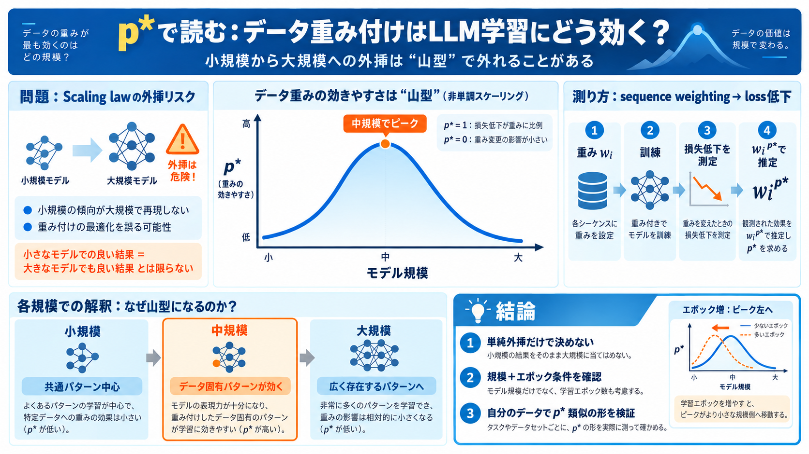

Jane Street Blog - A study of sequence weighting at scale
We find a number of aberrant scaling behaviors (reasoning about data mixing across scales is complicated!) and some stri…

データの重み付け（sequence weighting）が、学習後の損失低下にどれだけ効くかを、モデル規模ごとに定量化します。p* はその“効き方”を一つの指数にまとめた指標です。
LLM学習は高コストなので、小規模で得た振る舞いを大規模へ外挿する発想（scaling law）が使われます。しかし外挿が外れる“異常（aberrant）”が起きると、最適化が誤ります。
w_i を各学習シーケンスに与え、学習後に同じデータ上で損失がどれだけ下がったかを測定します。その関係を p* として推定します。
“重み付けを入れて→学習後に損失低下を見る”を繰り返し、モデル規模とエポック数にわたる p* の形を追います。
p* はモデル規模に対して単調に増減しません。小規模で低め→中規模で高め→大規模で再び低め、という非単調（aberrant scaling）が観測されます。
著者らは、モデルが容量や学習効率に応じて取り込む“パターンの種類”が段階的に変わり、その結果として重みの効き方が変わると仮説します。
訓練エポック数を増やすと、 p* のピーク位置がより小さいモデル側へ移る傾向が示されます。つまり“規模”だけでなく“学習時間”が段階構造を動かし得ます。
データ混合（mix）を変えると、品質差や重複度など別要因も同時に動きます。本稿はシーケンス単位で重みを再割当し、“重みそのもの”の効果をより純粋に観測します。
小規模で見えた振る舞いが大規模で再現されないことを、データ重みという設定で明確に示します。したがって、外挿カーブが当てはまる“理由”を評価設計で確かめる必要があります。
以下は、ユーザー提供テキストに含まれる内容の範囲内での概念整理です（論文の書誌情報は未提示）。必要なら、元論文タイトル・著者・URL/DOIを渡してください。
追加で作れるもの：p* 推定手順の数式的整理、非単調が起きる理論的要因（最適化・容量・勾配・正則化）を図解風に再構成。
We find a number of aberrant scaling behaviors (reasoning about data mixing across scales is complicated!) and some stri…
These numbers quantify the large impact of the scaling exponent. With a modest exponent of 0.03, scaling by 100 yields o…
``` [...] ``` [...] a 70B parameter model trained on 1.4T tokens (Chinchilla) a 380B parameter model trained on 300B to…
Not-Just-Scaling Laws are an evolving framework that challenges simple power-law scaling by incorporating context, desig…
By training LLMs with many different combinations of model and data size, we can discover a power law that predicts an L…